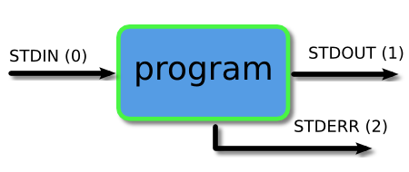

U ovom clanku razmatramo redirekciju i pajpove. Ova tehnika omogućava korisniku da kreira prilagođene komande kombinovanjem vise manjih komandi da bi postigao specificne zadatke koji se ne mogu posticci jednom Linux komandom.
Svaki program koji pokrecemo u komandnoj liniji ima tri toka podataka povezana sa njim, a to su:
-standardni ulaz (stdin)
-standardni izlaz (stout)
-standardna greska (stderr)

Piping i redirekcija su sredstva pomoću kojih mozemo povezati ove tokove izmedju programa i datoteka da bismo podatke usmerili na zanimljive i korisne načine.
Obicno cemo svoj izlaz dobiti na ekranu, sto je dobro u vecini vremena, mejdutim ponekad mozemo da ga sacuvamo u datoteci, da bi smo sacuvali kao zapis, ubacili u drugi sistem ili poslali nekom drugom. Operator veće od ( > ) ukazuje komandnoj liniji da zelimo da se izlaz programa sacuva u datoteci umesto da se stampa na ekranu. Hajde da vidimo primer.
1. $ ls
2. doc doc1 doc2
3. $ ls > myoutput
4. $ ls
5. doc doc1 doc2 myoutput
6. $ cat myoutput
7. $ doc
8. $ doc1
9. $ doc2
10. $ myoutput
Red1 - pocnimo tako sto cemo videti sta se nalazi u nasem trenutnom direktorijumu
Red2 - sada ćemo pokrenuti istu komandu, ali ovog puta koristimo > da kažemo terminalu da sačuva izlaz u datoteku mioutput. Primetićete da ne moramo da kreiramo datoteku pre nego što je sačuvamo. Terminal će ga automatski kreirati ako ne postoj
Red4 - kao što vidite, naš novi fajl je kreiran.
Red6 - hajde da pogledamo šta je tamo sačuvano.
Ako preusmerimo prema datoteci koja ne postoji, ona ce se automatski kreirati za nas. Medjutim ako sacuvamo u datoteku koja vec postoji, njen sadrzaj ce biti obrisan, a zatim ce se novi izlaz sacuvati u njemu.
$ cat myoutput
doc
doc1
doc2
myoutput
$ wc -l doc > myoutput
$ cat myoutput
23 doc
Umesto toga, možemo da dobijemo nove podatke da se dodaju u datoteku korišćenjem operatora duplo veće od ( >> )
$ cat myoutput
23 doc
$ ls >> myoutput
cat myoutput
23doc
doc
doc1
doc2
myoutput
Ako koristimo operator manje od ( < ) onda možemo poslati podatke na drugi način. Pročitaćemo podatke iz datoteke i uneti ih u program preko njegovog STDIN toka.
$ wc -l myoutput
5 myoutput
$ wc -l < myoutput
5
Mnogi programi nam omogucavaju da dostavimo datoteku kao argument komandne linije i ona ce citati i obraditi sadrzaj te datoteke.
Mozda se pitate zasto koristimo ovog operatera. Gornji primer ilustruje suptilnu ali korisnu razliku. Primetićete da kada smo pokrenuli
wc obezbeđujući datoteku za obradu kao argument komandne linije, izlaz iz programa uključuje ime datoteke koja je obrađena.
Kada smo ga pokrenuli preusmeravajući sadržaj datoteke u wc, naziv datoteke nije odštampan. To je zato što kad god koristimo
preusmeravanje, podaci se šalju anonimno. Dakle, u gornjem primeru, wc je primio neki sadržaj za obradu, ali nema saznanja
o tome odakle je došao tako da možda neće odštampati ove informacije. Kao rezultat toga, ovaj mehanizam se cesto koristi
da bi se pomoćni podaci (koji mozda nisu potrebni) ne bi stampali.
Lako mozemo kombinovati dva oblika preusmeravanja koje smo do sada videli u jednu komandu kao sto se vidi u primeru ispod.
$ wc -l < doc > myoutput
$cat myoutput
23
5
Sada pogledajmo treći tok koji je Standard Error ili STDERR. Tri toka zapravo imaju brojeve povezane sa njima. STDERR je tok broj 2 i možemo koristiti ove brojeve da identifikujemo tokove. Ako stavimo broj ispred operatora > onda će on preusmeriti taj tok (ako ne koristimo broj, kao što smo radili do sada, onda je podrazumevano tok 1).
$ ls -l video.mpg
ls: cannot access 'video.mpg': No such file or directory
$ ls -l video.mpg 2> errors.txt
$ cat errors.txt
ls: cannot access 'video.mpg': No such file or directory
Možda želimo da sačuvamo i normalan izlaz i poruke o grešci u jednu datoteku. Ovo se može uraditi preusmeravanjem STDERR toka na STDOUT tok i preusmeravanjem STDOUT toka na datoteku. Prvo preusmeravamo na datoteku, a zatim preusmeravamo tok grešaka. Preusmeravanje na tok identifikujemo tako što stavljamo & ispred broja toka (inače bi se preusmerilo na datoteku koja se zove 1).
$ ls -l video.mpg > doc > myoutput 2>&1
$ cat myoutput
ls: cannot access 'video.mpg': No such file or directory
-rw-rw-r-- 1 user user 125 мар 8 10:30 doc
Do sada smo se bavili slanjem podataka u i iz datoteka. Sada ćemo pogledati mehanizam za slanje podataka iz jednog programa u drugi. Zove se piping i operator koji koristimo je ( | ) (nalazi se iznad obrnute kose crte ( \ ) na većini tastatura). Ono što ovaj operator radi je da unosi izlaz iz programa sa leve strane kao ulaz u program sa desne strane. U primeru ispod navešćemo samo prve 3 datoteke u direktorijumu.
$ls
doc doc1 doc2 errors.txt myoutput
$ ls | head -3
doc
doc1
doc3
Možemo sastaviti onoliko programa koliko želimo. U sledećem primeru smo zatim prebacili izlaz u rep tako da dobijemo samo treću datoteku.
$ ls | head -3 | tail -1 |
doc2
Takodje mozemo kombinovati pajpove i redirekciju
$ ls | head -3 | tail -1 > myoutput
$ cat myoutput
doc2
Ispod je jos nekoliko primera koji će vam dati predstavu o vrstama stvari koje možete da uradite sa pajpovima. Postoji mnogo stvari koje možete postici uz pomoc pajpova, a ovo su samo neke od njih
U ovom primeru sortiramo listu direktorijuma tako da svi direktorijumi budu prvi.
$ ls -l /etc | tail -n +2 | sort
drwxrwxr-x 3 nagios nagcmd 4096 Mar 29 08:52 nagios
drwxr-x--- 2 news news 4096 Jan 27 02:22 news
drwxr-x--- 2 root mysql 4096 Mar 6 22:39 mysql
...
Napravite listu svakog korisnika koji poseduje datoteku u datom direktorijumu, kao i koliko datoteka i direktorijuma poseduje.
$ ls -l /projects/ghosttrail | tail -n +2 | sed 's/\s\s*/ /g' | cut -d ' ' -f 3 | sort | uniq -c
8 mitar
34 tina
37 srdjan
18 luka
Sacuvajte izlaz u datoteku
Dodajte izlaz u datoteku
Procitajte unos iz datoteke
Preusmeri poruke o gresci
Posalji izlaz iz jendog programa kao ulaz u drugi